Overview
My role
I worked as Design Lead in this Design Sprints client project
1. Researched unmet needs in the current check-in process
2. Created a service that includes a kiosk with a tablet interface, tables, equipment for hygiene screening
3. Evaluated solutions with experts and patient families
Outcome
Project Statement
How Might We
Design a welcome experience for Lurie Children’s Hospital?
This project seeks to understand multiple stakeholder needs and explore new service opportunities to be considered in the redesign of the reception space at Lurie Children’s Hospital. As designers, we should consider all of the primary stakeholder groups, design new touchpoints as well as do testing and prototyping based on in-context research.
The Solution
ExpressLu is
An Outpatient Family Express Check-in Lane
on Lurie Children Hospital Chicago Campus Second Floor
Process
We run 4 two-weeks sprints.
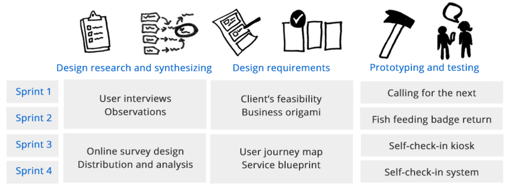Liying and I worked closely together in half of this project, including design research, insights synthesizing, concept generation, and user testing.
We split the primary responsibility of design implementation into industrial design and user experience design, respectively including ideation, prototyping, low-fi and hi-fi exploreation. And we made some design decisions together and helped review each other's work frequently.
I took primary responsibility of user experience part and did several rounds ideation and user testing, and finalized our user interface design.
| Deliverables
Qualitative Research:
12 user interviews, observation
Quantitative Research:
1 Online survey design and distribution(90% survey completion rate)
Collected 250 responses and conducted analysis
Ideation:
Business origami, user journey map, service blueprint
Validation:
Prototyping, in-context testing, 3D modeling and rendering
Understand And Discover
Background
Ann & Robert H. Lurie Children's Hospital of Chicago is a nationally ranked pediatric specialty hospital based in Chicago, Illinois. Lurie Chicago campus has more than 1,200 physicians on its medical staff and 4,000 employees. Based on volume, it is ranked #1 regionally in all pediatric specialties. In 2018, Lurie Children's Hospital was ranked #10 nationally in the U.S. News & World Report best children's hospital category.
Research
When we talked to people, one thing poped up many times is that when they saw a long line in the waiting area on the sedond floor, it makes concierges feel stressful and patient family wonder are they going to be late for their appointment.
Overview
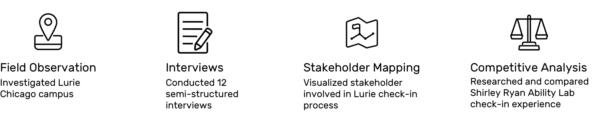Service Safari
Before the beginning of this course, We visited Capital One Cafe waiting area, CTA boarding, UA Flight Check-in, hotel check-in, and other places to understand the current utilization of technology in check-in service. After that, we came up with two by two frameworks to show the expecting service quality, and image Lurie is positioning itself.

Finding #1:
·Because of the hospital nature, although Lurie is facing younger patients, it may not requires a delightful experience. So that we should define the image of service Lurie wants to convey to the patient's families and, based on it, synthesize some design principles and develop design solutions.
Field Observation
We visited Lurie independently and record our first image and experience as first-time visitors. Some existing touchpoints have excellent performance for wayfinding, and brand image building also has space for improvement.
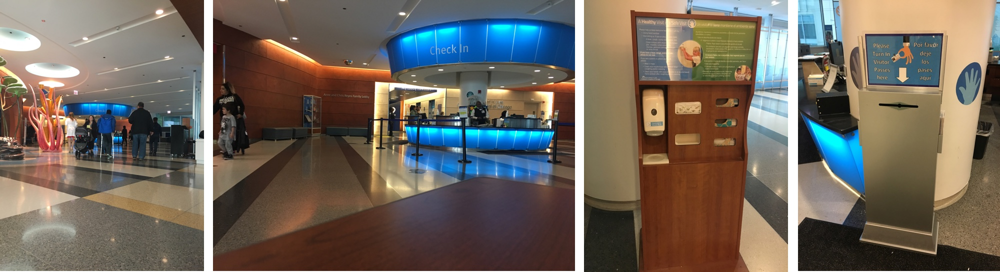
Finding #2:
·Lurie is using a marine animal theme as the welcome experience to the patient's family. So we need to consider to make our deliverables fit in this theme or create a new visual system for them.
·The second-floor check-in has different objectives as the check-in experience at other places we visited.
·The expectation of second-floor check-in might be quick, light, and friendly.
Talking to Expert(s)
We interviewed Barbara as our client with the perspective of representing the patient's family. Our topics with Cecillia focused more on the service and its quality of check-in experience. The goal of talking with experts was to understand their expectations from the enterprise side and consideration of regulation, management, security, and reputation. 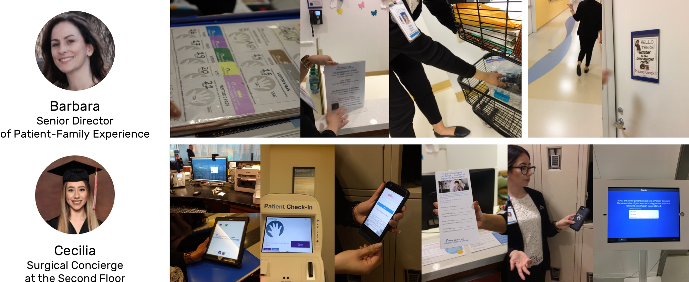Interception and Semi-structured Interviews
We did 12 interviews by intercept the patient's family around the parking lot, the waiting area, and cafe.
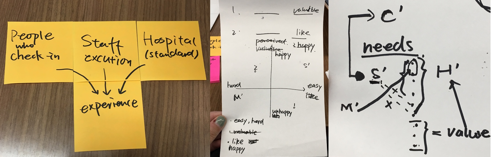
Finding #4:
·The most frequent answers about the check-in on the second floor are about the check-in purpose, the time, necessity, and concierge's help.
Survey Key Results
We conducted an online survey and sent out with the help of the patient's family experience department. We gathered 245 responses.
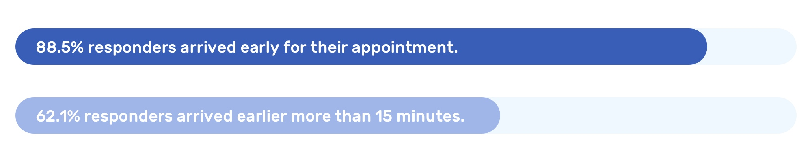Finding #5:
·A long waiting line is not only a problem for concierges but also for patient families and visitors. It resulted in arriving and checking-in much earlier than the appointment time for them.
How is it Currently Being Approached?
We understood the current user journey and service blueprint of the check-in experience from user's and hospital's persoectives.
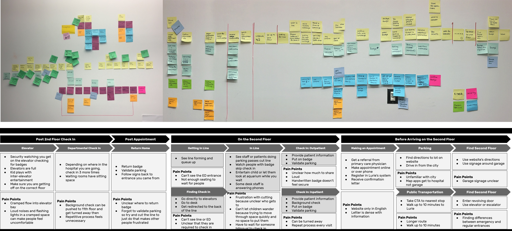Finding #6:
A problem we met is that all of the check-in processes should be handled by concierges manually and waiting in one line so that concierges are providing the same quality at a similar speed. But the patient's family may have different expectations of the second-floor check-in.
Competitive Analysis
We visited Shirley Ryan Ability Lab in Chicago. They have amazing VI system design so that the physical signs, screens and facilities are all using the bright orange color in the building.
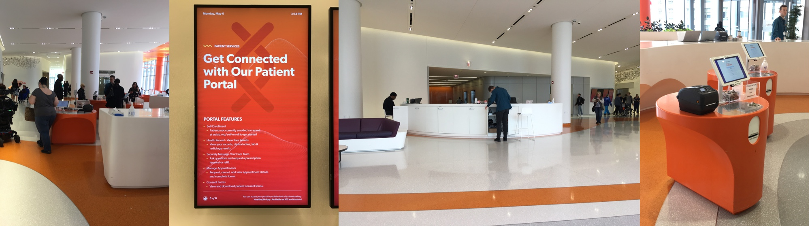Strengths
1. Striking and attractive lively branding leading by warm orange color
2. Accessible digital screens at the primary wayfinding touchpoint like elevators and stair hallway
3. Has concierges around the check-in area providing help with a smile
Opportunities
1. Better check-in platform UI design
2. Access to self-security
Weaknesses
1. The check-on system UI is basic without well-design flow and structure
2.No waiting line in the waiting area might cause chaos when during rush hour
3. Without screening, everyone could enter the 18th floors and some other levels
4. No clear sign for parking ticket stamping
Threats
1. The check-in space is on the 18th floor, which is confusing for first-time visitors.
2. No security screening by registering an ID would bring safe issues.
User Insights
Five Ws
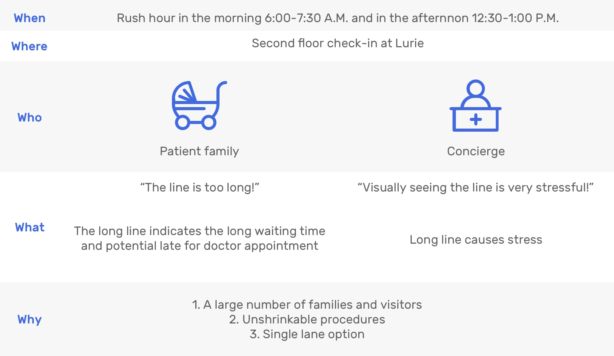So, a feasible solution is creating another check-in lane.
Probelm Statement 2
How to create a new check-in lane that can successfully shorten the line in the other lane?
Potential Solutions

Solution 1 User Story
There is a digital screen to show a QR code updating every day on Lurie's second-floor wall. Visitors could scan by smartphone when they are onsite and enter a six digits appointment code to check-in. Then they could get a digital badge on the phone.
Touchpoints
Large Size Screen,
Onsite Check-in QR Code,
Appointment 6 Digit Code,
Digital badge
Solution 2 User Story
There are some kiosks on Lurie's second floor with an iPad. Visitors could scan their QR code on their phone, appointment confirmation letter by a scanner, and confirm their appointment to check-in. Then they could get a printed badge.
Touchpoints
Kiosk,
iPad App,
Appointment QR Code,
Letter,
Text Message,
Confirmation Email,
QR Code Scanner,
Printed Badge
Decision
We decided to explore the solution 2 further, since:
1. Lurie couldn't change the policy of printing badge and attach it to cloth for screening by security or help on each floor.
2. Solution 1 requires a more open space, which is not feasible for Lurie since there are large bearing columns around the circle table.
HOW?
Trying to make a new check-in lane works for a specific group of people.
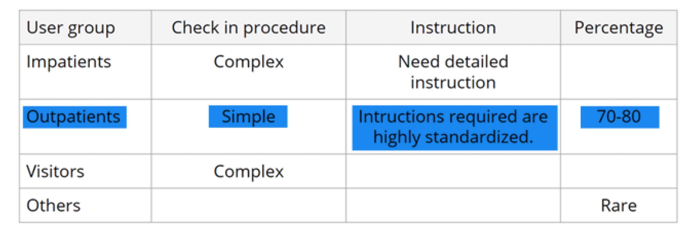We thought Outpatient Family would suit those requirements. Reasons and feasibilities are below:
1. Outpatient families take 70-80% number of daily appointments at Lurie.
2. Their check-in process without a background which needs to check in another separate system check is relatively simple so that cost less efforts.
3. And the visit instruction for them is highly-standardized.
Ideation
Solution
A new kiosk service that allows patient family check-in by using Ipad with concierge's help when is neccessary.
Probelm Statement 3
How to encourage outpatient families to use the second lane?
Are outpatient families technically feasible for using machine interaction to check in?
Early Concept Testing
Testing
Q: Do outpatient families like machine interaction?
"Oh yes! That would be great!"
"I'm definitely willing to do it by myself if the self-check-in kiosk is an option."
Validation
Key Insights from Online Survey
1. Majority of response want a check-in kiosk
2. People's QR code usage is much higher than we guessed

What are their other concerns?
1. Germ concern about touch screen
2. Park ticket validation
3. 1st-time using instruction
4. Like to have human interaction
So that we decided to design a welcome experience with self-check-in kiosk and digital check-in system on iPad to provide service.
Usability Testing
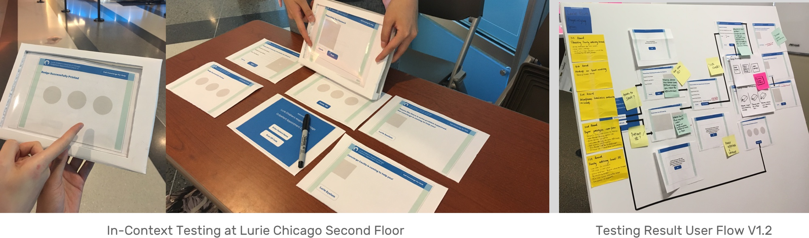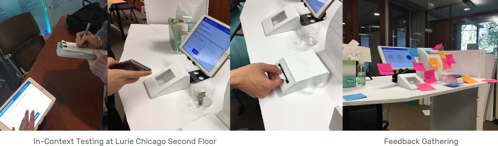
Design
Service Design
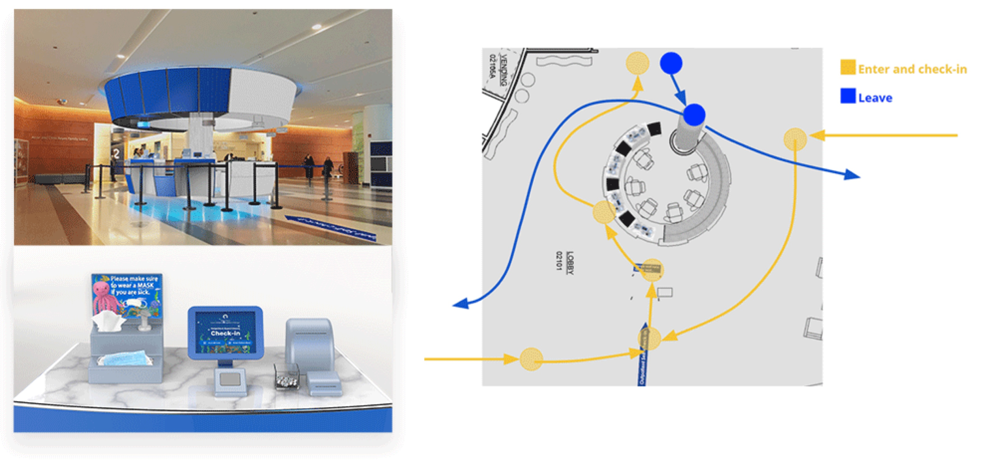Persona | Who are going to use self-check-in kiosk?
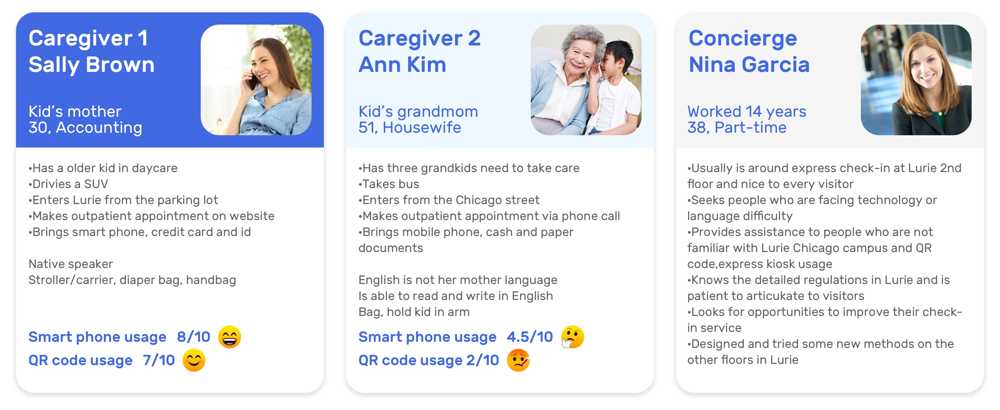They are outpatient families. Usually, they may need to carry a large amount of items with a large footprint.
And we expect they would feel comfortable with using machine and familiar with tablet interactions.
User Journey Map
Design Principles
Lurie’s Position
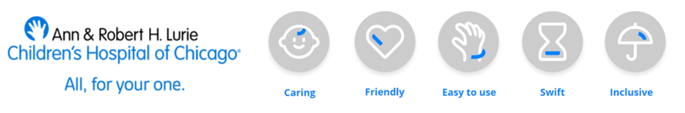As we know, Luire has its promise, "All, for your one," which is impressed us. Correspondingly, from our research, we also extracted several design principles instructed our experience design.
Service Blueprint | Express Check-in Service
Patient Experience Design
#1 Enter and wait
Touchpoint: Indicators and signs
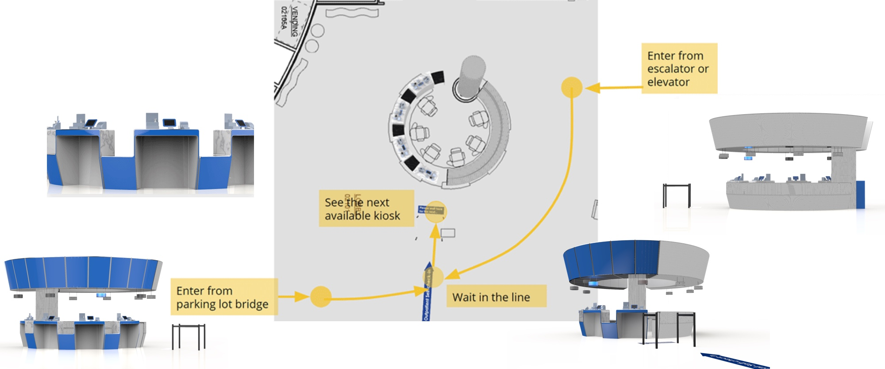#2 Check-in
Touchpoint: Self-check-in Kiosk table
Touchpoint: Ipad check-in system
Detailed Ipad check-in system UI Design
ExpressLu UX Design
Step 1
Input Appointment Information
By scanning QR code (Recommended)
1. Provide scanning instruction
2. Show the progress while scanning

By manually typing in (Back-up)
1. Reserve keyboard space
2. Show error and blank status on the same page without jumping or popup
Exceptional Case
Call concierge for help
1. Accessible and noticeable
2. Coordinated indicator light
Step 2
Confirm Appointment
1. Highlight the appointment information
2. Provide the “Not me” option and call concierge directly
Step 3
Print Badge(s)
1. Choose the number of badges instead of typing
2. Provide picture and words instruction

Step 4
Children Hospital Visit Tips
1. Some necessary instruction but not too much
2. Inform them to return badge at the starting point of their visit
3. Provide a standalone page for instructions to emphasize
Step 5
Stamp Parking Ticket
1. Automatically stamping by insert the ticket into machine
2. Build into the check-in process without concierge's validation and explain

Step 6
Complete Check-in
1. Countdown in 15s to finish the current check-in process
2. Calling for the next light will be turned on automatically after finishing the check-in process

#3 Finish check-in and go up stairs
Touchpoint: Self-screening station
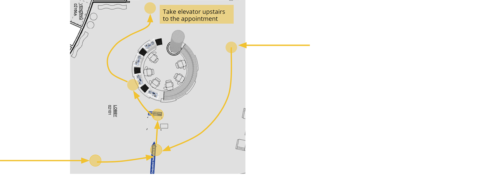#4 Leave hospital
Touchpoint: Badge return box
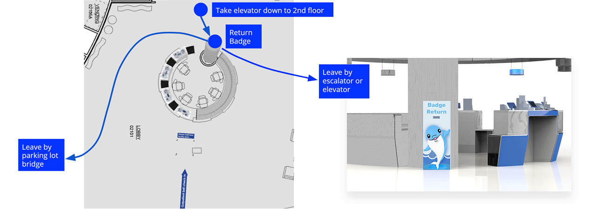Outcomes
Impact
A desirable check-in option for outpatient families
Faster
-Fewer people waiting in the line since outpatient only
-No need for concierges to identify patient family’s purpose
Fewer mistakes and higher efficiency
-One concierge can take care of four families at a time
Achieved Goals
Not to replace concierges, but to give them more irreplaceable jobs, like
Handling system errors and exceptional cases
Helping patient families who encounter problems during self-check-in